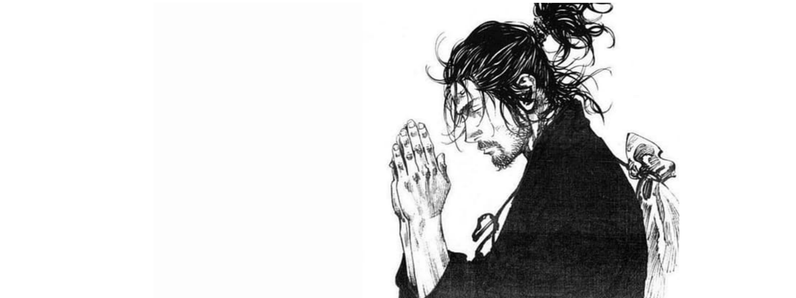

Miyamoto Musashi melalui karya tulisnya Dokkodo mengajarkan bagaimana cara pandang dia akan kehidupan ini serta bagaimana menjalani hidup tak terkalahkan seperti hal nya yang dia alami dari pengalaman hidupnya.
Ada 21 ajaran Miyamoto Musashi didalam Dokkodo yang bisa kita adopsi dan aplikasikan dalam hidup ini agar kita juga bisa memenangkan "pertempuran" dalam kehidupan kita.
Terima segala hal sebagaimana adanya.
Jangan cari kesenangan demi kepentingan sendiri.
Jangan tergantung pada emosi sesaat dalam menghadapi situasi apapun.
Pikirkan diri anda secukupnya tapi mendalam terhadap dunia.
Jangan terikat hawa nafsu.
Jangan menyesali apa yang sudah dilakukan.
Jangan cemburu.
Jangan bersedih karena perpisahan.
Kekesalan dan keluh kesah tidaklah pantas untuk dirimu dan orang lain.
Jangan hanyut oleh nafsu asmara
Dalam segala hal jangan terikat pada pilihan tertentu.
Jangan persoalkan dimana kamu tinggal.
Jangan mengejar makanan makanan yang lezat.
Jangan terikat harta yang tidak kita butuhkan.
Percaya dirimu dan jangan bertindak mengikuti tahayul.
Jangan mengumpulkan senjata atau berlatih dengan senjata di luar yang dibutuhkan.
angan takut mati.
Jangan tergiur untuk menguasai barang atau tanah di usia tua Anda.
Hormati Buddha dan para dewa tanpa berharap bantuan mereka.
Anda bisa korbankan diri sendiri tetapi harus menjaga kehormatan Anda.
Jangan menyimpang dari strategi.